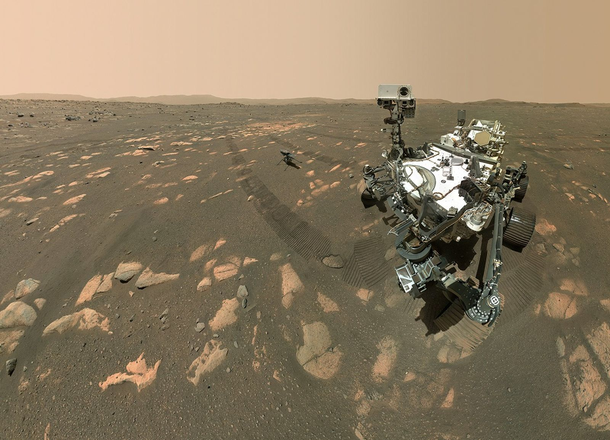

November 5, 1964
Mariner 3
Goal: Mars Flyby
Mars Missions
As part of our overarching Moon to Mars exploration strategy, NASA is engaged in a systematic, science-driven campaign to unlock the secrets of the Red Planet and lay the foundational groundwork for eventual human habitation. Building upon decades of discovery from a robust international fleet of robotic orbiters, landers, and rovers, our current missions are prioritizing the search for evidence of past microbial life, characterizing the complex dynamics of the Martian climate, and analyzing the planet's diverse geological systems. By leveraging advanced technology demonstrations, such as aerial exploration and in-situ resource utilization (ISRU) tests, we are continuously enhancing our understanding of Mars while developing the critical operational capabilities necessary to safely transport, land, and sustain American astronauts on another world. .

NASA’s Perseverance Mars rover has successfully documented a historic "family portrait" alongside the Ingenuity Mars Helicopter, providing a definitive look at our two explorers within the Jezero Crater. This panoramic selfie, a composite of 62 images captured by the WATSON camera, features Ingenuity positioned 4 meters (13 feet) away as it prepared for its pioneering flight on another world. Against the backdrop of an ancient lake bed, the image highlights our advanced hardware—including the Mastcam-Z imaging system—and the rugged Martian terrain we are traversing to search for signs of ancient life. This unique perspective serves as a testament to the engineering milestones achieved as we continue to unlock the geological and biological secrets of the Red Planet.

precious geological samples into orbit. Below, the Perseverance rover and next-generation Sample Recovery Helicopters stand ready after having successfully transferred sealed tubes to the Sample Retrieval Lander. Overhead, the Earth Return Orbiter awaits the rendezvous to capture the sample container for its historic journey back to Earth. This mission represents a monumental leap in our quest to explore the Red Planet, bringing us one step closer to analyzing Martian soil in terrestrial laboratories to search for definitive signs of ancient life.

The Rosalind Franklin rover serves as the centerpiece of the international ExoMars mission, a high-priority collaboration between ESA and NASA currently targeted for a 2028 launch aboard a SpaceX Falcon Heavy. Destination: Oxia Planum, an ancient, clay-rich plain where the rover will utilize its unique two-meter drill—the deepest ever sent to Mars—to access organic materials shielded from harsh surface radiation. Supported by NASA-provided launch services, descent engines, and the MOMA instrument for organic molecule analysis, this solar-powered explorer is engineered to "walk" across challenging terrain and survive the Martian chill with advanced radioisotope heaters. By integrating high-resolution PanCam imagery with a sophisticated onboard analytical laboratory, we are poised to probe deeper into the Martian crust than ever before to uncover the planet’s biological and geological history.